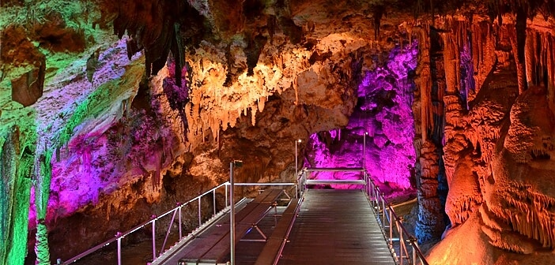

Образувана е от карстови процеси в дебелослойни долнокредитни сивобели варовици. Тя е сред най-големите български пещери. Изходът ѝ се нарича Вратача. Обособени са зали и галерии: Триумфална зала, Полето, Хармана, Прилепна галерия, Стрелбището, Галерия с рисунки, Зловеща галерия, Слънчева зала, Зала на сталактоните, Зала на падналия бор, Зала на тополата, Тронна зала, Концертна зала. Някои зали са с колосални размери. Всички зали са свързани чрез галерии и пещерни тунели, има много сталактити, сталагмити и сталактони, а в Триумфалната зала има малко езеро. В пещерата има постоянна температура от 12 °C. Общата дължина на галериите ѝ е 2500 m.
